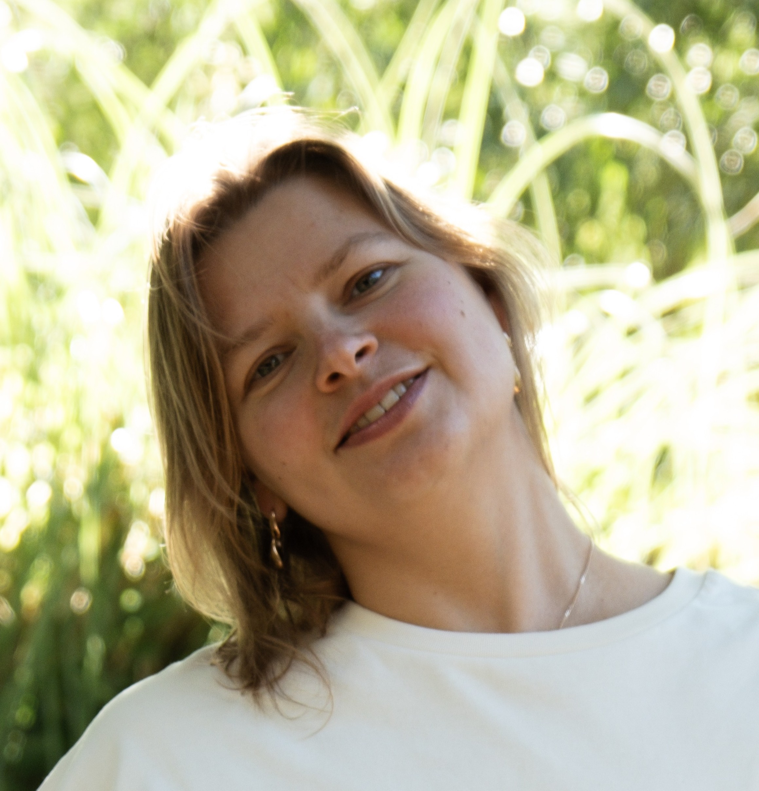
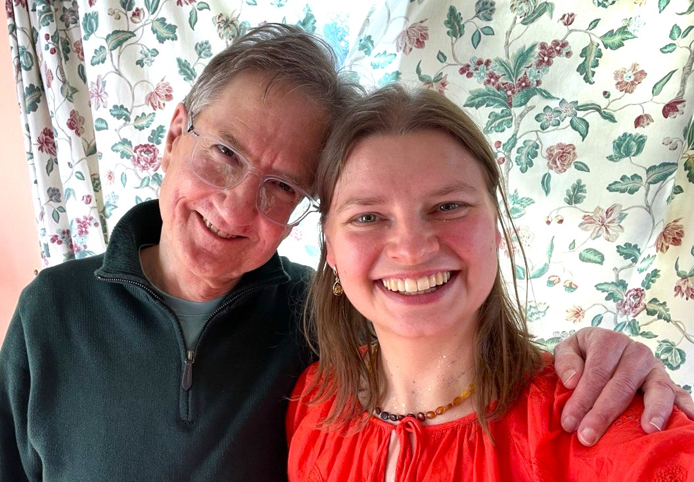

IFS как лайфстайл
Курс для тех, кто хочет познакомиться с IFS как образом жизни
и начать опираться на него в повседневных ситуациях.
Стоимость: 300 € · онлайн · группа до 14 человек
Курс ведёт Алёна Павленко, эксперт и куратор IFS Academy, PhD, 350+ часов телесной практики.

Привет, я Алёна
До IFS я была в терапии уже несколько лет, пробовала разные методы и практики. Много понимала головой, но в повседневную жизнь это либо не ложилось, либо ложилось со скрипом — и внутри появлялся новый критик: «Мы же уже знаем, как этот паттерн устроен, почему мы снова здесь?»
IFS зацепил меня тем, что здесь нет «плохих» частей, от которых нужно избавляться, и тем, как через любопытство и практику он естественно встроился в жизнь. IFS оказал колоссальное влияние на уровень удовлетворённости жизнью: стало меньше внутреннего напряжения и больше пространства реализовывать свой потенциал, а не тратить силы на борьбу с собой. Из этого опыта и двух лет в IFS Academy (More Self) родилась идея курса.
Для кого этот курс
Если вы присматриваетесь к IFS и хотите взять пользу этого метода для своей повседневной жизни:
- Читаете книги и посты про IFS, может быть, слушали лекции или подкасты — модель откликается, но непонятно, как применять её «на себя».
- Замечаете своего внутреннего критика, перфекциониста, достигатора и часть, которая устала всё вывозить — хочется построить гармоничные отношения внутри системы, без напряжения и выгорания.
- Любите понимать, как устроено, но от одного понимания мало — нужен формат, который переводит его в действия.
*Это курс «для себя»: он не является обучением методу для профессиональной работы как помогающий практик.
Classic и Evolving IFS простыми словами
IFS (Internal Family Systems) предлагает такой взгляд: мы как система частей — установок, паттернов, реакций, мыслей. Всё это здесь называется частями. У каждой части есть благое намерение — она по‑своему пытается помочь системе, даже если способ, которым она это делает, не всегда гармоничен для всей системы.
В центре — состояние Self, из которого можно с любопытством и уважением замечать части, слышать, что для них важно, и искать решения, которые учитывают всю систему, а не только одну часть.
Evolving IFS — развитие классического IFS с фокусом на состоянии: в каком состоянии вы в контакте и с собой, и с частью; что происходит с телом; насколько безопасно и достаточно ли поддержки в моменте. Важно не только «что делаем», но и «в каком состоянии это происходит».
Программа курса
-
Неделя 1Карта IFS: части, Self, система
Что такое IFS: части, система, Self. Какие бывают части, зачем они вообще появляются, и как на это смотреть так, чтобы не превращать себя в проект по починке.
-
Неделя 2Self и состояние
Как вы узнаёте своё Self‑состояние, чем оно отличается от «идеальной версии себя». Зачем в Evolving IFS столько внимания состоянию, телу и ощущению безопасности.
-
Неделя 3Знакомство с частями: первые шаги диалога и 6F
Как «находить» часть в моменте и вступать с ней в контакт. Разбираем базовый протокол 6F: по шагам знакомимся с частью и узнаём, что для неё важно.
-
Неделя 4Изгнанники: кто они и как с ними быть
Кто такие изгнанники в IFS, как понять, что сейчас поднимается именно изгнанник, а не просто «плохое настроение». Говорим о том, как быть с этим бережно: на что опираться, чего не делать в одиночку и когда лучше привлекать терапевта.
-
Неделя 5Отношения через призму частей
Внутренние и внешние отношения: критик, достигатор, перфекционист, близкие, семья, работа. Смотрим, как наши части встречаются с частями других людей и что помогает выстраивать более гармоничные отношения во внутреннем и внешнем мире.
-
Неделя 6Интеграция и свои IFS-инструменты на дальше
Собираем воедино всё, что случилось за эти недели. Формируем ваш личный набор опор, инструментов и практик, с которыми вы пойдёте дальше — чтобы IFS оставался не только в теориях, но и в повседневности.
Как меняется жизнь, когда появляется язык частей
Личные отношения и ощущение себя
«Для меня это как будто новый уровень осознанности, новый слой открывается. Когда в моменте осознаешь часть, которая тебя захватывает, ты можешь с ней разъединиться, и тогда появляется больше ясности.»
«Стало меньше реактивной реакции. Вместо того чтобы действовать как хочет протектор, я замедляюсь, даю ему пространство внутри позлиться, и только потом начинаю что-то делать. В итоге вместо большой ссоры с мужем на неделю получился живой и классный диалог.»
«Больше появилось сострадания к своим частям, соответственно, и к другим людям тоже. Это меняет отношения с близкими.»
Бизнес и работа
«В диалоге с деловыми партнёрами я объясняю через части, почему я хочу чего-то конкретным образом. Это помогает снизить напряжённость, особенно когда у тебя есть часть-перфекционист, которой надо, чтобы всё было идеально.»
«В бизнесе, когда ты с партнёром можешь говорить на этом языке, можно избегать очень многих конфликтов.»
«С коллегами в рабочей коммуникации общение через контекст частей сильно снижает градус обсуждения — появляется понимание, что в разговоре реагирует конкретная часть, а не весь человек… это делает разговор более экологичным.»
Формат и стоимость
- 6 недель · 12 встреч · старт курса 5 апреля · старт продаж 21 марта.
- Вторник и четверг, 12:00–13:30 по Португалии (14:00–15:30 по Москве).
- Zoom, группа до 14 человек.
- Одна встреча в неделю — теория и демо, вторая — практика в парах.
- Задания между встречами и чат для вопросов по IFS.
Максимум пользы курс даёт, когда вы по-настоящему уделяете это время себе: приходите на встречи с камерой, присутствуете в процессе, участвуете в практике в парах и при пропуске нагоняете в течение недели. Лайфстайлом это становится, когда вы постепенно уделяете чуткое внимание себе: сначала на встречах курса, затем в жизни — из этого вырастает стабильный контакт с собой.
Иногда чтобы увидеть и почувствовать, важно замедлиться: перестать пытаться успеть в многозадачности и правда отдать эти полтора часа себе. Если сейчас такой возможности нет — можно бережно отложить и прийти в один из следующих потоков.
Стоимость курса — 300 €.
Оплата возможна в евро или в рублях.
Ведущая курса Алёна Павленко
Мой путь и опыт
По первой профессии я физик, PhD: аспирантура в Германии, постдоки в США и Великобритании, потом стратегический консалтинг (Deloitte) в Голландии. Всю жизнь меня интересовали сложные системы и то, как сделать так, чтобы они работали.
В практику работы с людьми и их внутренними системами я пришла не по плану. Сначала годы своей терапии, потом 350+ часов телесной практики — баня, массаж, работа с телом и состоянием. Потом появился IFS, работа с частями и Self. То, что помогало мне самой, осваивала глубоко. Метод дал колоссальный результат и внедрился в жизнь, значимо повысив уровень удовлетворённости. Со временем стали обращаться: сначала по телу и состоянию, потом по IFS.
IFS я узнала через Гэтри Сайена — он ученик Ричарда Шварца и один из ведущих преподавателей Evolving IFS. Я два года училась у него, прошла курс Ричарда Шварца IFS and Spirituality, а сейчас вхожу в команду IFS Academy (More Self): эксперт и куратор, помогаю людям интегрировать метод в жизнь и практику.
Этот курс — продолжение всего этого пути. Он про то, как IFS может стать вашим языком и опорой в обычной, неидеальной человеческой жизни.

Следующий шаг
Запишитесь в вейтлист
Старт курса — 5 апреля. Старт продаж — 21 марта. Чат откроется за неделю до старта курса. Чтобы попасть в вейтлист, заполните форму по ссылке ниже.
Записаться в вейтлистЕсли у вас есть вопросы про курс, можно написать мне в Telegram.
Написать в Telegram